01
Общество и городская среда · событие дня
Такое поручение глава города Александр Болдакин дал руководству МБУ «Дорремстрой», которое должно использовать благоприятные погодные условия для данной цели.…
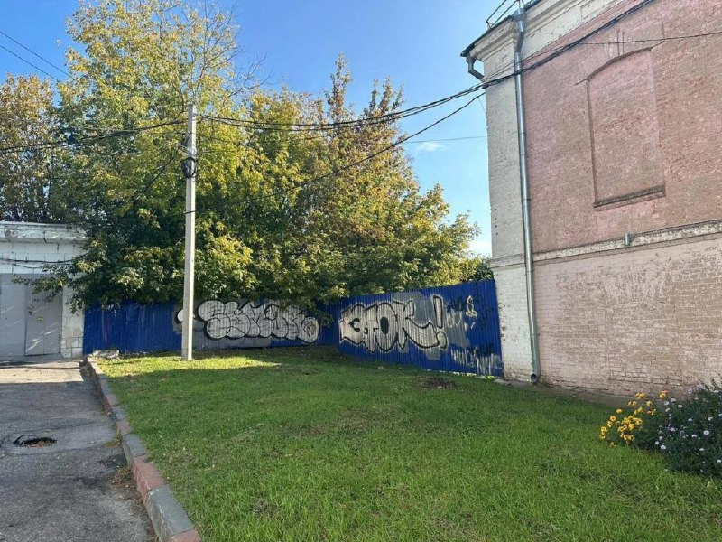
Уже во второй раз уличные художники раскрасили забор возле музея Аркадия Пластова на улице Гончарова.…
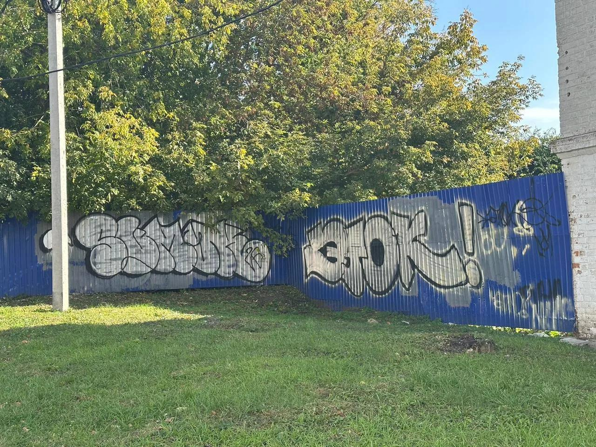
Пятигорская фабрика! Огромный выбор: шубы, норка, мутон, бобрик, каракуль, дубленки!…
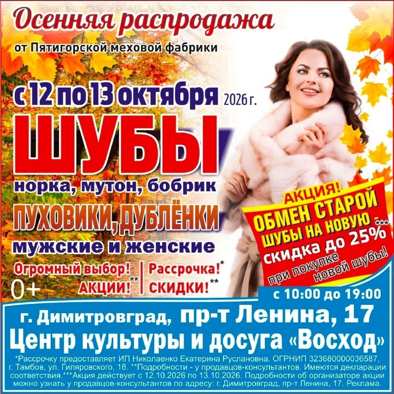
Раньше там размещалось управление культуры мэрии, теперь служба работает в гостинице «Волга».…
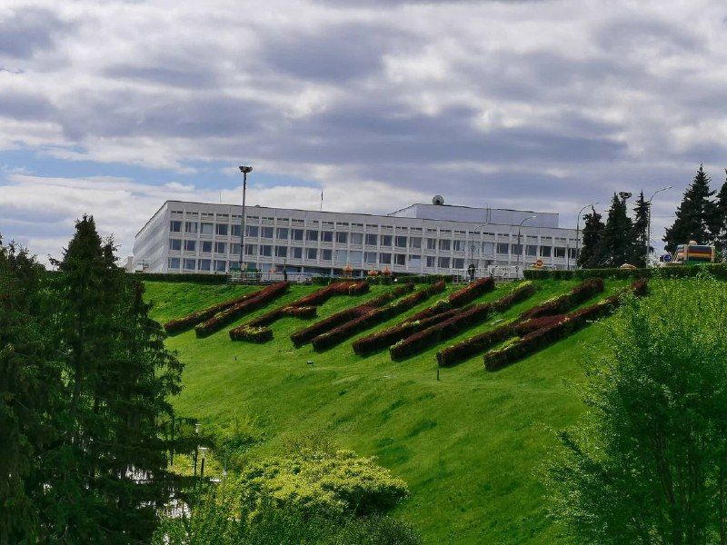
Такое поручение глава города Александр Болдакин дал руководству МБУ «Дорремстрой», которое должно использовать благоприятные погодные условия для данной цели.…
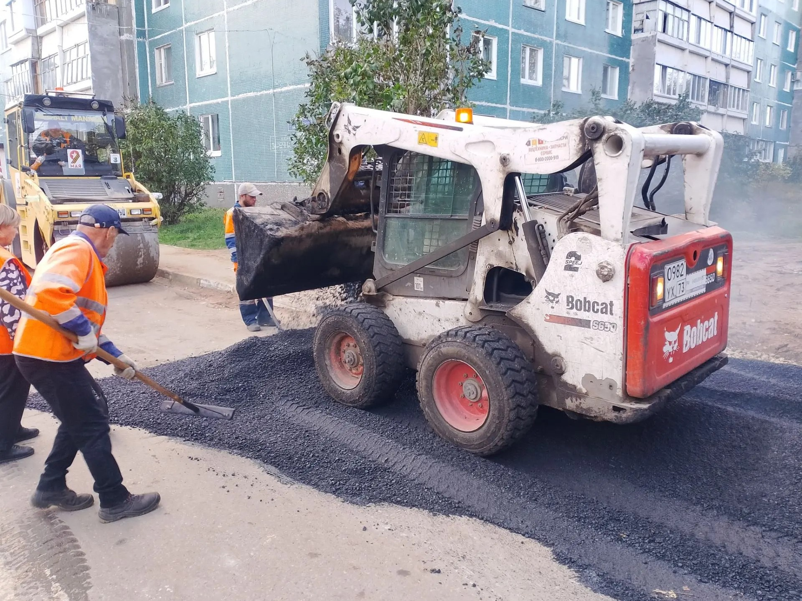
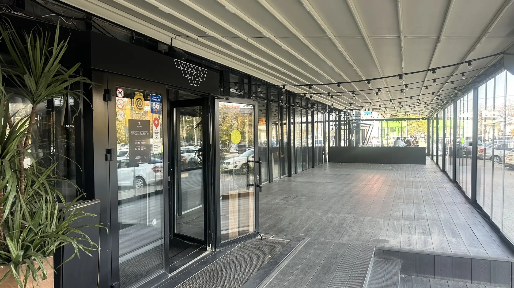
Вслед за холдингом «Другие рестораны» от программы лояльности для посетителей отказались заведения, входящие в ООО «Кравченко групп».…
Памятник планируют разместить на территории нового жилого комплекса на месте снесённых корпусов завода «Контактор».…
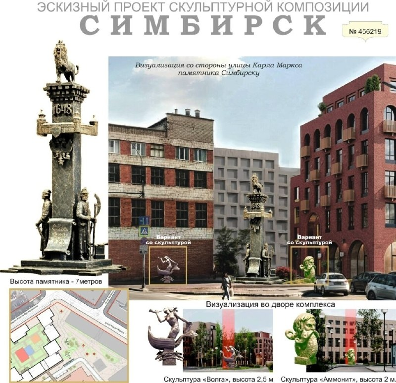
Вспомним Питера Паркера и тех, кто не раз пытался испортить ему жизнь, узнаем знакомые сцены, персонажей и детали вселенной Marvel.…
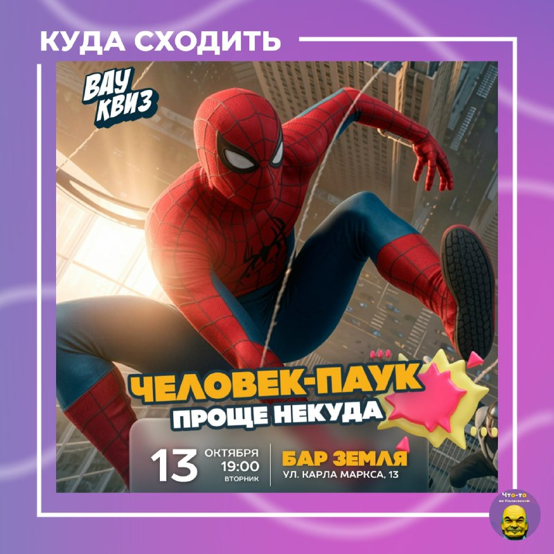
В Ульяновской области обсудили перспективы развития организованной торговли сельхозтоварами и возможность выхода местных компаний на публичный рынок акций.…
Протезы представляют собой гибкие трубки из специальных нитей, структура которых обеспечивает тонкость стенок и устойчивость к растяжению, и применяются в кардиохирургии для длительного замещения повреждённых сосудов.…
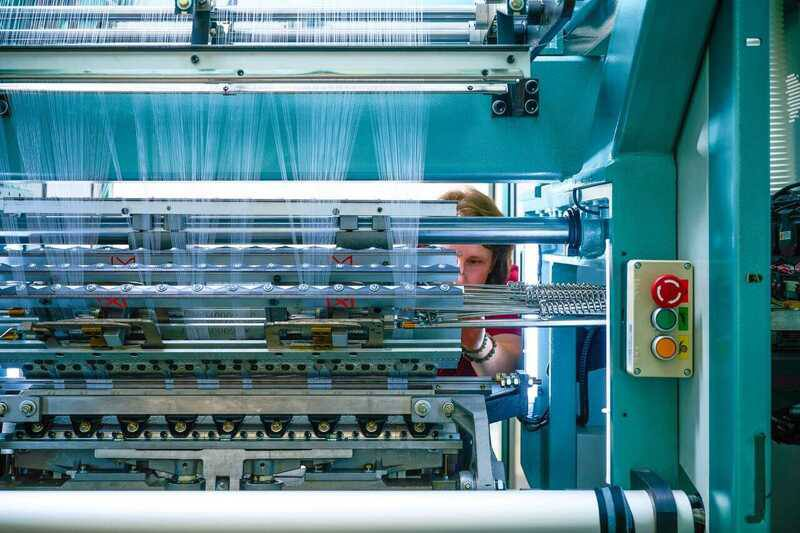
Сегодня в одном обзоре — ключевые достижения последних дней.…
На заседании градкомисии областного градосовета 8 октября были рассмотрены итоги конкурса на лучший проект скульптурной композиции «Симбирск» в Ульяновске, сообщает министерство госимущества и архитектуры региона.…
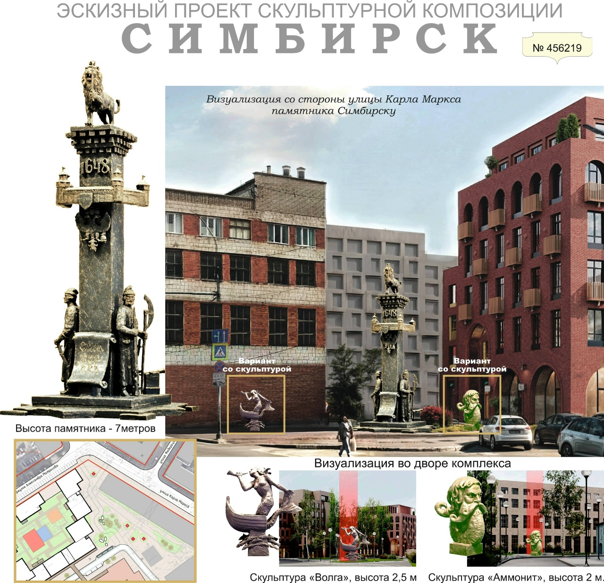
На встрече с председателем Общероссийской общественной организации «Деловая Россия» Алексеем Репиком обсуждались меры, направленные на развитие инвестиционной активности.…

В Ульяновской области возникла потребность в донорах первой (I) и четвертой (IV) групп крови с отрицательным резус-фактором. На данные группы поступило большое количество заявок от медицинских организаций.…
В Сенгилеевском районе врачи обследовали более 4 тысяч сельчан. Следующая остановка — Старомайнский район.

Узнать подробнее о заболевании, а также пройти диагностику без предварительной записи жительниц области приглашают с 12 по 18 октября во время тематической медицинской недели.…

С 21 по 23 октября в Москве состоится очная часть федерального этапа XIII Всероссийского конкурса «Лучшая инклюзивная школа России — 2026».…

«Работу начали в 2025 году, создав первые шесть агроклассов. В этом году — еще 12.…
Студент Димитровградского музыкального колледжа Глеб Белов стал лауреатом I степени конкурса «Поволжская Романсиада» Открытый региональный конкурс молодых исполнителей русского романса проходил в Татарской государственной филармонии имени Габдуллы Тукая в Казани.…
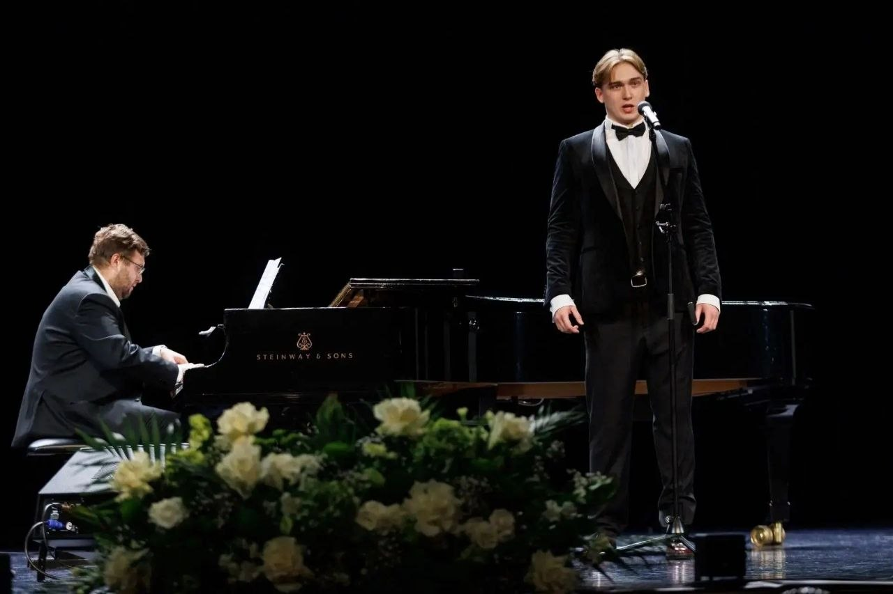
➖ MIT Technology Review : ИИ научился создавать реалистичные виртуальные миры.…

На сайте администрации Ульяновска размещен проект решения Гордумы с изменениями в Программу приватизации на 2026 и плановый период 2027 и 2028 годов.…

📅 Когда: 23 октября в 18:00 📍 Где: МЦСИ (ул.…


Основные причины возникновения пожаров — аварийный режим работы электрооборудования и неосторожное обращение с огнем.…
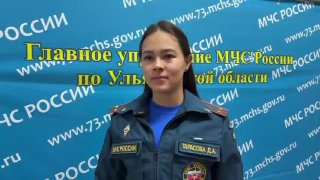
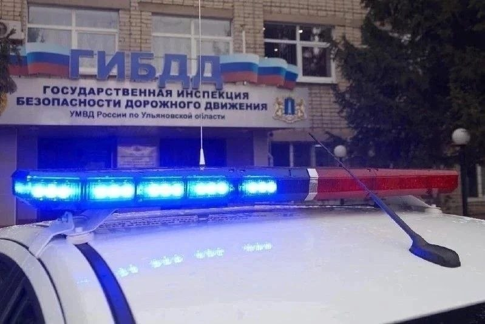
Проверку проводит помощник прокурора города В. В. Никитин.…
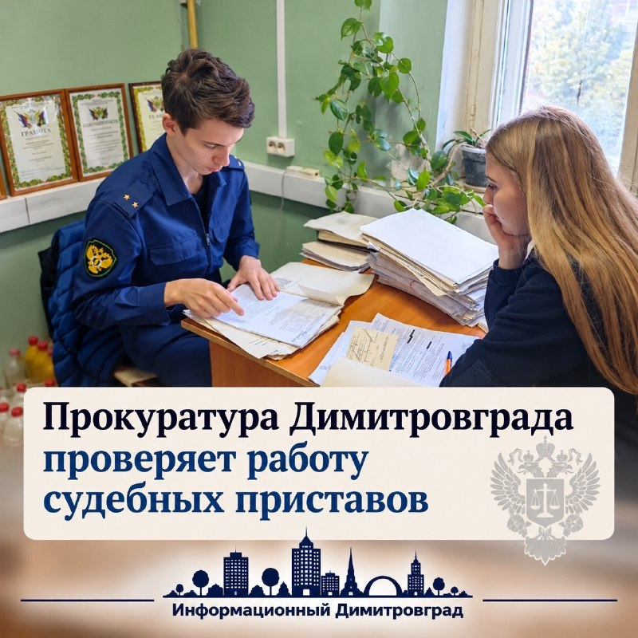
По данным следствия, с сентября 2025-го по июнь 2026 года мужчина распространял её идеи среди заключённых в исправительном учреждении.…

Возбуждены уголовные дела по статье об организации деятельности экстремистской организации и участии в ней.…
*" Международное движение сатанизма" признано экстремистским и запрещено на территории…
Речь идет о бывшем директоре диализного центра в Инзе Илье Журавлеве.…
Установлено, что с сентября 2025 по июнь 2026 года он, будучи активным участником запрещенной в России организации, склонял других заключенных к участию в ней.……
Владельцы питбайка, предположительно, живут в частном секторе. Просят помочь с номером владельца или питбайка.
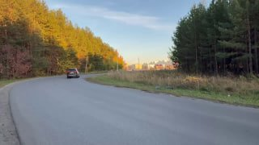

С начала года Управление Россельхознадзора по Чувашской Республике и Ульяновской области при внутрироссийских железнодорожных перевозках на территории досмотрело 1000 партий кормов растительного происхождения общим весом порядка 72 тыс.…
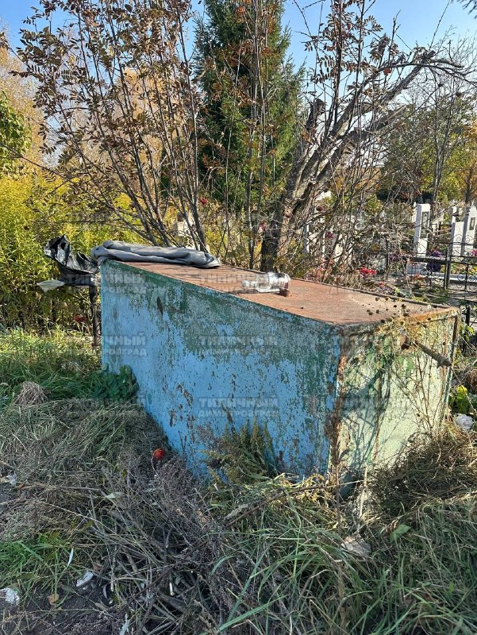
Городское кладбище ,участок номер 31 .Стоит бак весь заваленный , что мусор валиться на могилу.…

Ульяновскую область представляет детский оздоровительно-образовательный центр «Светлячок».…
С 12 по 18 октября проходит Неделя борьбы против рака молочной железы (в честь месяца борьбы с раком молочной железы).…
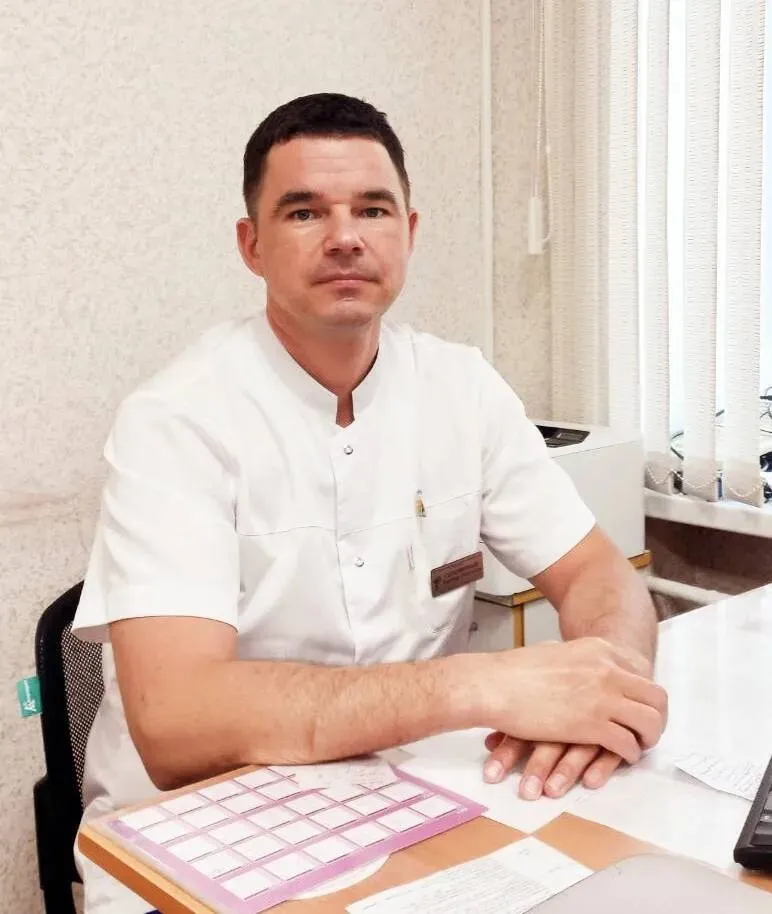
В 2026 году проект стал победителем Конкурса инициатив родительских сообществ Российского общества «Знание» при поддержке Министерства просвещения РФ.…
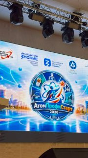
Это воспитанники детских домов «Соловьиная роща», «Дом детства», «Планета», «Гнёздышко».…
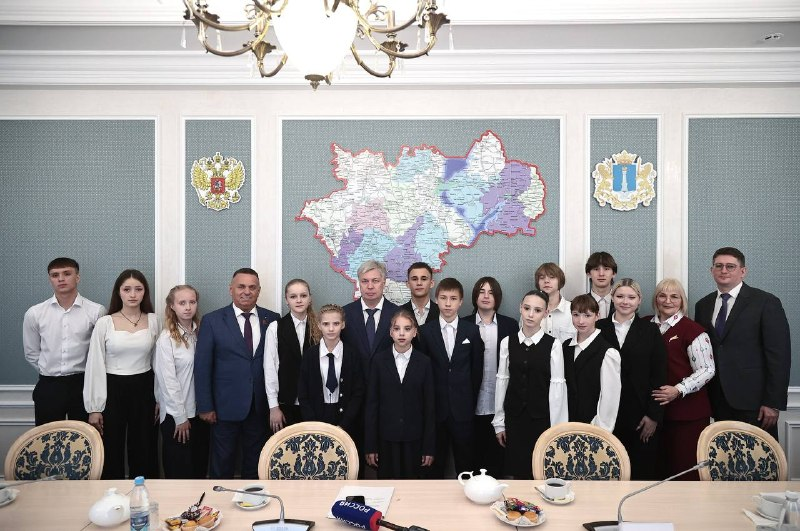
За кулисами ульяновских хвалила Светлана Хоркина , а Дмитрий Губерниев не скрывал восторга. Трансляция шоу — 4 ноября на «Звезде».
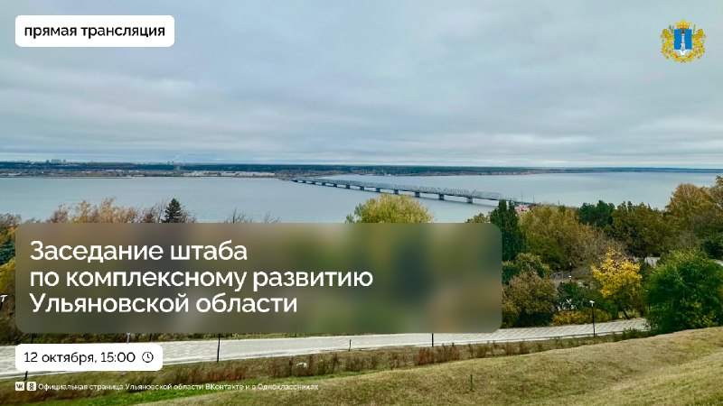
Мэр Александр Болдакин держит запуск тепла на контроле и передаёт заявки на регулировку внутридомовых систем в управляющие организации.…
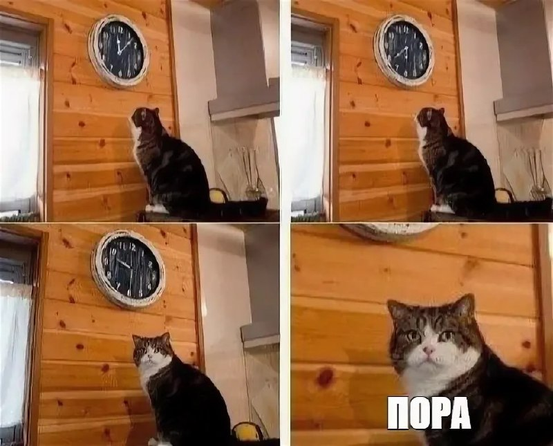

С 8 по 12 октября в Краснодаре прошли всероссийские соревнования по вольной борьбе среди юниоров до 21 года памяти Бесика Кудухова.…

Физическая подготовка действительно впечатляет: сразу видно, человек отлично умеет стремительно удаляться от утопающего в проблемах города.…


Чаще всего питомцы: 🔹 переливают аквариумы (такие потопы были в Лабытнанги и Москве) ; 🔹 оставляют лужи (в Татарстане собака испортила соседям потолок и проводку на 24,5 тыс.……

| Тема | Завтра | Ожидание | Уверенность |
|---|---|---|---|
| Губернатор / власть | ↓ спад | ~13.9 упоминаний | средняя |
| Суды и криминал | ↓ спад | ~23.1 упоминаний | средняя |
| Транспорт и дороги | ↓ спад | ~12.5 упоминаний | средняя |
| Медицина | ↓ спад | ~3.6 упоминаний | высокая |
| Городская среда | ↓ спад | ~15.5 упоминаний | средняя |
| БПЛА и воздушные угрозы | ↓ спад | ~9.1 упоминаний | средняя |